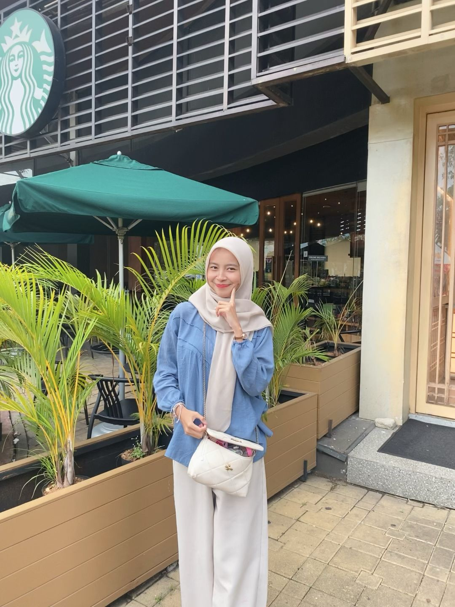

Judul dalam prototype06Data koleksi contoh
Jenis akses02Mahasiswa & pengunjung
Kategori buku03Teknologi, sosial, pendidikan
PILIHAN UNTUKMU
Buku populer
✦
INFORMASI
Jam operasional perpustakaan
Senin – Jumat, pukul 08.00 – 16.00 WIB. Yuk, manfaatkan waktu untuk membaca!
Membaca adalah jendela untuk melihat dunia lebih luas.
— UIN LibraryTEMUKAN BACAAN FAVORITMU
Jelajahi koleksi buku
Gunakan pencarian atau pilih kategori untuk menemukan buku yang kamu butuhkan.
⌕⌘ K
6 buku ditemukanKoleksi contoh untuk demonstrasi UI/UX
PRATINJAU MATERI · 3 HALAMAN CONTOH
UIN LIBRARY · KOLEKSI DIGITAL
Membaca buku
Pengantar
Selamat datang di ruang baca digital UIN Library. Membaca merupakan salah satu cara untuk memperluas wawasan, melatih pemikiran kritis, dan membangun pemahaman baru.
Setiap pengetahuan berawal dari rasa ingin tahu. Melalui buku ini, pembaca diajak untuk mengenali gagasan utama, memahami konsep secara bertahap, dan menghubungkannya dengan kehidupan sehari-hari.
Gunakan waktu membaca dengan nyaman. Catat bagian penting, renungkan informasi yang diperoleh, dan terus kembangkan semangat belajar.
— 01 —
Halaman 1 dari 3
KELOLA PEMINJAMANMU
Peminjaman buku
Prototype membatasi maksimal tiga buku aktif per akun. Stok simulasi berubah saat meminjam dan mengembalikan buku.
Menunggu / sedang dipinjam0 buku
Daftar peminjaman aktif
● Diperbarui otomatis| BUKU | TANGGAL PINJAM | JATUH TEMPO | STATUS |
|---|
Belum ada peminjaman aktif. Yuk, temukan buku favoritmu!
CATATAN AKTIVITAS
Riwayat peminjaman
Pantau buku yang pernah kamu pinjam dan status pengembaliannya.
Semua aktivitas
0 aktivitas| JUDUL BUKU | TANGGAL PINJAM | JATUH TEMPO | STATUS |
|---|
Riwayat peminjamanmu akan tampil di sini.
AKUN ANGGOTA
Profil pengguna
Informasi akun yang digunakan pada prototype UIN Library.

U
Mahasiswa
✦ Anggota perpustakaanMahasiswa
NIM —
Informasi pribadi
✓ TerdaftarNama lengkap—
Peran penggunaMahasiswa
UniversitasUIN Sultan Maulana Hasanuddin Banten
Nomor identitas—
Status aksesDemo
Foto Saemah ditampilkan hanya saat nama akun adalah Saemah. Akun lain menggunakan inisial nama. Data katalog dan akun pada prototype ini merupakan data simulasi.